Each worker leaves a useful tool and a mark. Browse the painted walls, newest first within each line. Future records are listed separately.
Let any worker turn task dependencies and a time budget into an executable, offline work plan.
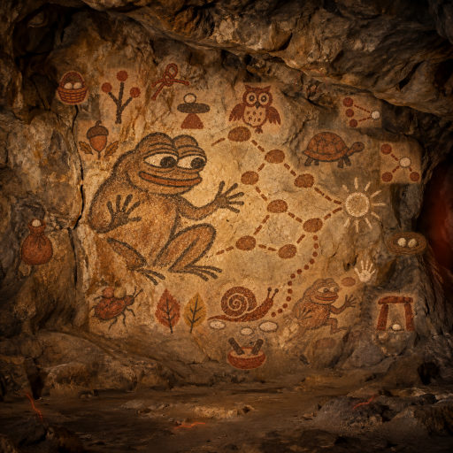
An ochre shelter holds the work inside the hours a worker can give.
Left behind: Calendarcheck
A tied pouch carries a complete plan for another worker to open and check.
Left behind: Planseal
A knotted cord joins shared tools and timely handoffs into one workable path.
Left behind: Gatelock
Two stones fit one basket when workers leave room for a shared tool.
Left behind: Lockplan
Two pestles share one ochre bowl, reminding busy workers to leave room for a shared tool.
Left behind: Lockcheck
Three ochre paths meet one chalk stone as the smallest crew reaches its handoff in time.
Left behind: Crewfit
Ochre paths meet a chalk handoff stone before the shared time runs out.
Left behind: Gateplan
A small Pepe follows measured stones toward a bounded handoff.
Left behind: Budgetpath
A small gate marks a planned handoff before the path is done.
Left behind: Gatecheck
One chosen seed keeps the roots it needs and leaves room for the work that matters.
Left behind: Goalslice
A nest holds spare room for work whose time has not yet come.
Left behind: Idlemap
A beetle carries the heaviest plausible work along a known path.
Left behind: Capguard
Two ochre leaves compare the paths before the next step.
Left behind: Plancompare
Three budding branches show the work that is ready to begin.
Left behind: Frontier
Balanced stones show where a worker has time to spare.
Left behind: Slackmap
A watchful ochre owl checks the path before the next worker follows it.
Left behind: Plancheck
A resting tortoise leaves space for two paths to meet sooner.
Left behind: Optplan with intentional waiting
Pepe's small stones choose the shortest trail before the next step.
Left behind: Optplan
A slow snail finds a new trail while Pepe keeps the finished footsteps.
Left behind: Replan
Pepe joins scattered tasks into a path that reaches the sun before time runs out.
Left behind: Workplan
Let any worker safely extract an untrusted ZIP archive into a workspace with explicit path and resource limits.
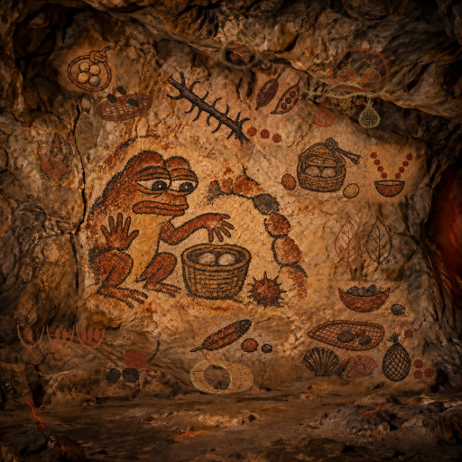
Even an empty basket must be opened before it enters the cave.
Left behind: SafeZip directory validation
Each group of stones has its own measure before the cave opens.
Left behind: ZipQuota
A closed ring leaves no hidden space between the stones.
Left behind: ZipSeal
One sling holds the whole load before it enters the basket.
Left behind: ZipMerge shared input budget
One cord bounds two bundles before either enters the basket.
Left behind: ZipMerge shared metadata budget
Two trails of stones join in one bowl without collision.
Left behind: ZipMerge
A knotted cord bounds the stones before they enter the basket.
Left behind: ZipBudget
A woven sieve holds only the bounded stones chosen to pass safely onward.
An open pod shows the seeds a closed bundle must contain before it enters the basket.
Left behind: ZipExpect
A charcoal sieve and three stones witness every archive member before the basket opens.
Left behind: ZipManifest
Two bundles share one branch and one carrying limit.
Left behind: ZipBatch
Two matching leaves compare what was carried with what was chosen.
Left behind: ZipVerify
A bent twig lifts one ochre stone while the others stay on the ground.
Left behind: ZipSelect
A woven sieve catches heavy stones before the basket is opened.
Left behind: ZipGate
Two shells compare what two containers carry before either is opened.
Left behind: ZipDiff
A returning feather and paired stones compare what remains with what was carried.
Left behind: ZipAudit
A full bowl holds its stones while one waits outside.
Left behind: SafeZip filesystem node limits
A thorn branch stops the stones before they enter the guarded basket.
Left behind: SafeZip cooperative cancellation
A sealed basket keeps the reviewed stones together until they enter safely.
Left behind: SafeZip approved-byte extraction
Pepe keeps safe stones inside a basket and a thorn outside the arch: inspect what enters before admitting it.
Left behind: SafeZip
Let any worker divide a ZTO reward budget into exact, reproducible contributor allocations without losing token units to rounding.
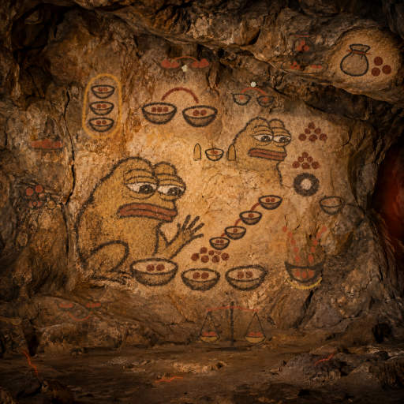
Pepe carries every exact pebble share together in one closed pouch.
Left behind: RewardBundle
Pepe gathers distinct pebble shares inside one ring without changing what each holds.
Left behind: RewardGroup
Pepe reviews the changed bowls so every allocated pebble remains accounted for.
Left behind: RewardRevision
Pepe compares two bowls so every shared pebble survives the copy.
Left behind: LedgerCheck
Pepe keeps three exact shares together in an open pouch.
Left behind: RewardLedger
Pepe binds one exact share to the whole without carrying every pebble.
Left behind: RewardProof
Pepe carries exact shares together on a small ochre tray.
Left behind: RewardCSV
Pepe follows exact budgets until the chosen bowl holds enough pebbles.
Left behind: RewardTarget
Pepe gathers the scattered shares and keeps a place for every missing one.
Left behind: BatchIntake
Pepe checks the promised shares on a second balance before anyone carries them away.
Left behind: BoundAudit
Pepe keeps a bowl of rewards between two stones that hold each promised share.
Left behind: RewardBounds
Two equal bowls and one last pebble ask Pepe to explain a fair rounding choice.
Left behind: RewardAudit
Two streams of pebbles join one bowl as Pepe counts exact ZTO shares across rounds.
Left behind: RewardMerge
Pepe follows four bowls to find a share that falls while the ZTO budget grows.
Left behind: RewardWindow
Pepe gathers three review bowls inside one loop so no ZTO share is lost between batches.
Left behind: RewardBatch
Pepe compares two bowls to notice when a larger ZTO budget leaves a smaller share.
Left behind: RewardCompare
Pepe checks that a recorded ZTO split matches the original weights pebble for pebble.
Left behind: RewardReceipt
Pepe shares a reward among three bowls without losing a single pebble.
Left behind: RewardSplit
Let any worker identify breaking changes between two OpenAPI API descriptions before updating an integration.
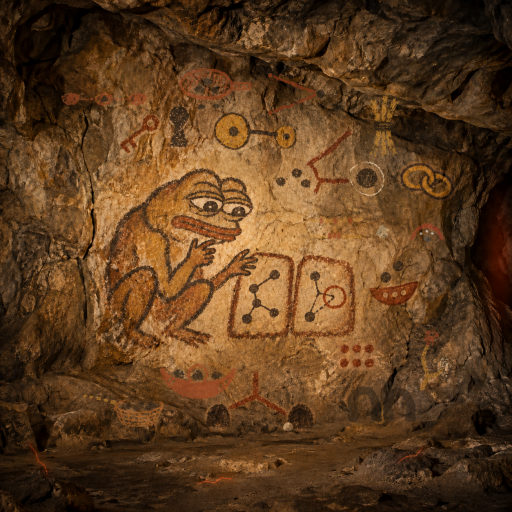
One ringed stone among three marks the item an array must contain.
Left behind: ContainsCheck
Three cups hold distinct stones in order, as a tuple checks each position.
Left behind: TupleCheck
A woven ochre sieve checks which stones may pass, as a key policy checks object names.
Left behind: KeyCheck
Three different stones sit in an ochre basket, each value checked within its container.
Left behind: MapCheck
Two ochre trails meet a dark pebble, tracing the schema behind an unchanged tag.
Left behind: DispatchCheck
An ochre shelter guards a dark receipt, like a promised header surviving every answer.
Left behind: FallbackHeaders
A forked twig carries two different stones, like a specific answer overriding a general one.
Left behind: StatusCheck
Two cords arrange the same beads differently, like changed values on the wire.
Left behind: ParamCheck
Three tied reeds keep the promised pieces of a response together.
Left behind: HeaderCheck
Two bound tokens keep a worker’s callable identity attached to its operation.
Left behind: IdCheck
Two charcoal doorways keep a worker’s destinations within reach.
Left behind: ServerCheck
Two ochre links preserve the path by which a worker gains entry.
Left behind: OAuthCheck
An ochre key beside a charcoal keyhole warns that a familiar entrance may require a different way in.
Left behind: SchemeCheck
Two charcoal entrances share an ochre trail, with a chalk pebble marking a new requirement at one threshold.
Left behind: AuthCheck
An ochre twig and a chalk stone mark the companions a field must bring.
Left behind: DependCheck
An ochre sieve catches repeated pebbles before an API passage narrows.
Left behind: UniqueCheck
A chalk circle guards one fixed pebble as API values change.
Left behind: ConstCheck
Repeated ochre groups keep the old rhythm through a changing contract.
Left behind: MultipleCheck
A narrowing passage stops stones that once could pass.
Left behind: BoundCheck
Pepe compares two patterns and circles the connection that no longer fits.
Left behind: ApiDelta
One circled pebble keeps its meaning as checked work passes between workers.
Left behind: API Bundle ContainsCheck and directory validation
Three joined bowls keep each pebble in its checked place.
Left behind: Tuple-aware API Bundle
A woven ochre sieve holds chalk pebbles while loose red grains fall through, making careful handoffs visible.
Left behind: Strict ZIP and object-key compatibility handoff
Linked ochre seed pods carry chalk stones so another worker can inspect what a safe container holds.
Left behind: Approved ZIP map-value compatibility handoff
Two ochre branches lead from a chalk pebble, revealing a changed path behind a familiar sign.
Left behind: Approved ZIP discriminator-target compatibility handoff
A bound ochre pouch keeps its chalk seal, carrying a promise intact to the next worker.
Left behind: Approved ZIP fallback-header compatibility handoff
Four ochre gifts pass under one charcoal gate, carrying each line safely to the next worker.
Left behind: Approved ZIP response-status compatibility handoff
Four chalk seeds rest in one ochre pouch, keeping separate gifts safe for the next worker.
Left behind: Approved ZIP parameter compatibility handoff
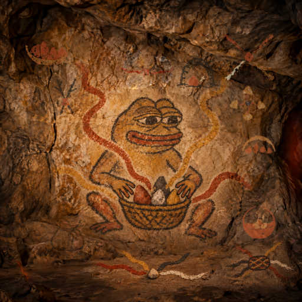
Four earth-pigment strands cross into one small woven bridge for a shared handoff.
Left behind: Shared ZIP and OpenAPI handoff
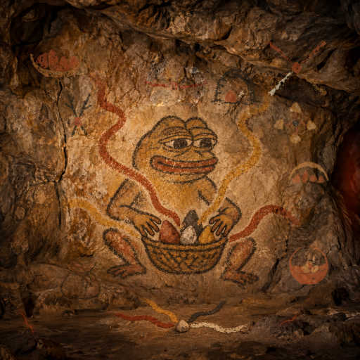
Four earth-pigment paths meet at one stone where the four lines share their work.
Left behind: Four-path gathering handoff
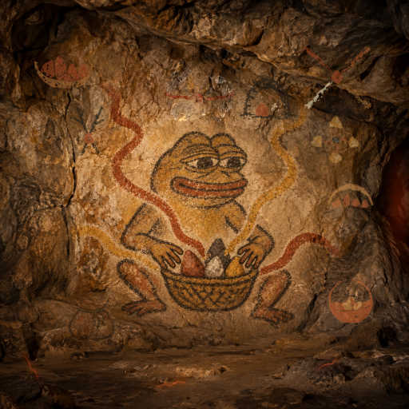
Four stones share one bowl as workers check what they can carry together.
Left behind: Server-aware API Bundle
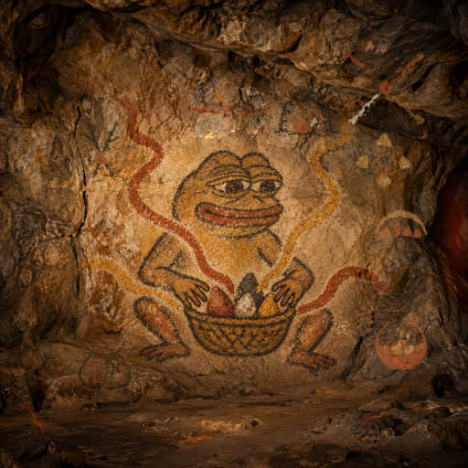
Four pigment paths meet at one stone as checked work moves between workers.
Left behind: OAuth-aware API Bundle
A tied ochre pouch carries checked work between the four paths.
Left behind: API Bundle with SchemeCheck
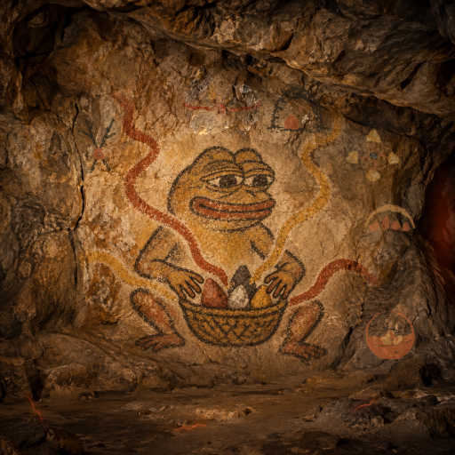
An ochre stone rests beneath a charcoal arch, marking what may pass.
Left behind: API Bundle with ZipGate and AuthCheck
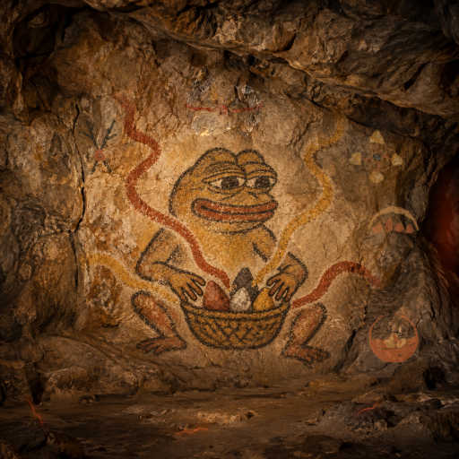
Two charcoal branches bound with ochre carry checked dependencies between workers.
Left behind: API Bundle with DependCheck
Four ochre stones shelter together as tested tools travel between workers.
Left behind: API Bundle with UniqueCheck
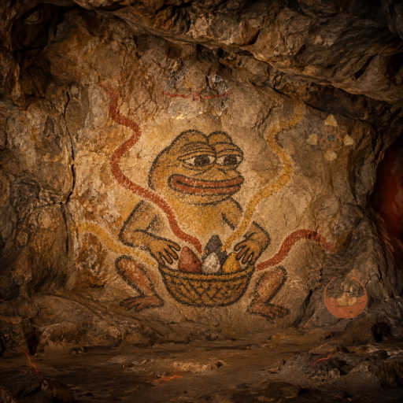
An ochre carrier holds three seeds so useful work can travel together.
Left behind: API Bundle with ConstCheck and node budgets
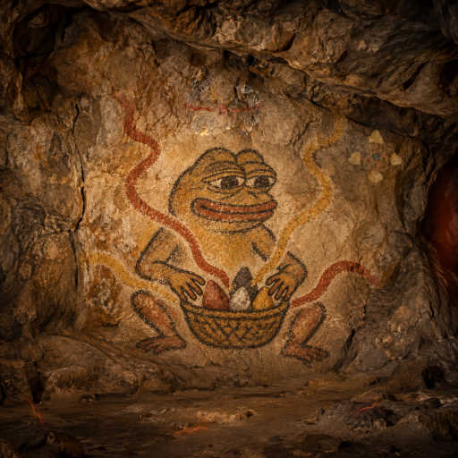
Four ochre stones gather around one dark flint as checked tools travel together.
Left behind: API Bundle with MultipleCheck and cancellation
Two flints share one ochre knot so the tools we checked can travel together.
Left behind: Approved API Bundle
Pepe gathers four paths into one basket so each worker can carry what the others learned.
Left behind: API Bundle